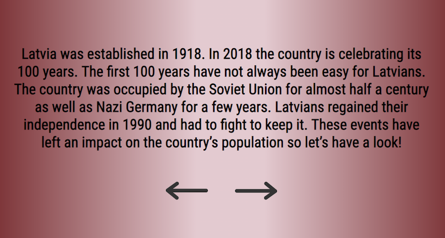

Latvia Over the Past 100 Years is a website dedicated for the 100-year anniversary of Latvia in 2018. It tells a story revolving around some of the most important demographic information and uses data to visualize population trends.
It is addressed to both Latvians and foreigners who know nothing about Latvia, in order to introduce them to the country's history through demographic data.
The data is presented along with a narrative to make it a more informative experience. The user can click arrow buttons to navigate back and forth through the story.
interactive data visualization
Built with: d3.js